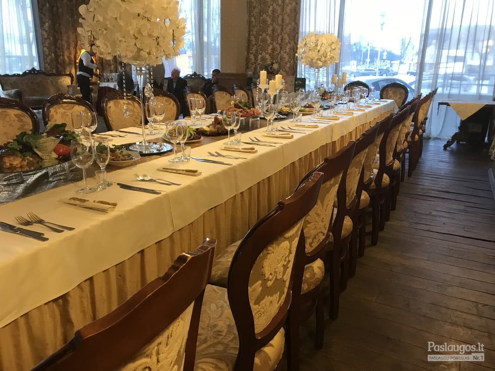
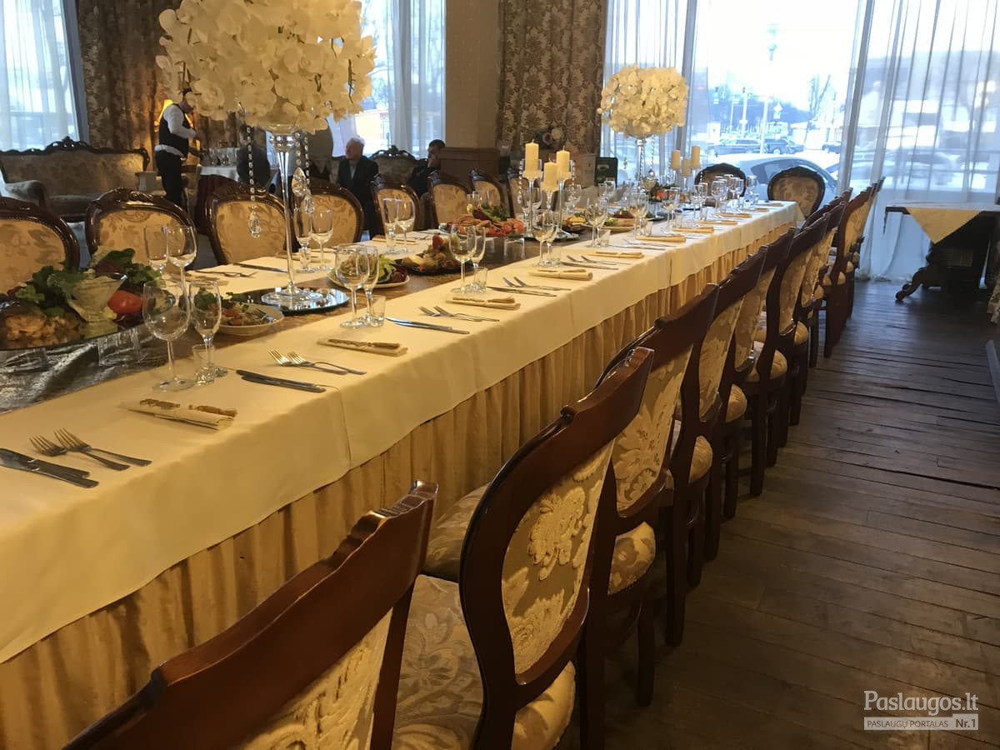

Restoranas Panevėžyje „Déjà vu“ - Viešbutis „Romantic“ - Romantic.lt
2020.10.27 13:30
Restoranas Panevėžyje „Déjà vu“ - Viešbutis „Romantic“ - Romantic.lt Sveikatingumas Produktai Sporto klubas „Romantic Informa“ Baseinų ir pirčių erdvė Sveikatingumo centro taisyklės Konferencijos Vietų skaičius ir kainos VIP posėdžių kambarys „Senvagė“ „Fortūna“ „Mažoji salė Restoranas Bajoriški šaltibarščiai Pusryčiai Dienos pietūs Meniu Vynas Vasaros terasa Viešbutis Viešbučio istorija Viešbučio dalys Senasis malūnas Senvagė Nevėžis Taisyklės Etno SPA NAUJIENA: depiliacijos ritualas Guaša masažas Mergvakaris Specialūs pasiūlymai Dovanų čekis Viešnagės paketai Šventės ir renginiai Lankytinos vietos Inkognito pasiūlymas Apie mus Galerija Kontaktai Partneriai Karjera Ekologija Mokausi rūpintis planeta! River Cleanup Lietuva Kamštelių vajus Atsakingas vartojimas Žaliasis raktas Rėmimas Viešbutis Viešbutis Viešbučio istorija Viešbučio dalys Senasis malūnas Senvagė Nevėžis Taisyklės Restoranas Restoranas Bajoriški šaltibarščiai Pusryčiai Dienos pietūs Meniu Vynas Vasaros terasa Konferencijos Konferencijos Vietų skaičius ir kainos VIP posėdžių kambarys „Senvagė“ „Fortūna“ „Mažoji salė Sveikatingumas Sveikatingumas Produktai Sporto klubas „Romantic Informa“ Baseinų ir pirčių erdvė Sveikatingumo centro taisyklės Etno SPA Etno SPA NAUJIENA: depiliacijos ritualas Guaša masažas Mergvakaris Specialūs pasiūlymai Specialūs pasiūlymai Dovanų čekis Viešnagės paketai Šventės ir renginiai Lankytinos vietos Inkognito pasiūlymas Apie mus Apie mus Galerija Kontaktai Partneriai Karjera Ekologija Ekologija Mokausi rūpintis planeta! River Cleanup Lietuva Kamštelių vajus Atsakingas vartojimas Žaliasis raktas Rėmimas English Русский 日本語で 中文 Naršydami Romantic.lt sutinkate, jog naudojame slapukus, kurie užtikrina sklandų svetainės veikimą. Daugiau informacijos Supratau Reservation Transliacija Lietuvių English Русский 日本語で 中文
Restoranas
Vasaros terasa
Esant palankioms oro sąlygoms, kviečiame apsilankyti restorano lauko terasoje. Tai viena iš jaukiausių viešbučio vietų, kurioje bėsimėgaudami puikia draugija, galėsite grožėtis viešbučio jaukia atmosfera ir bene gražiausia Panevėžio panorama.
Plačiau ›Kviečiame paragauti bajoriškus šaltibarščius su vėžių uodegėlėmis
Tai autentiškas, iš Aukštaičių didikų dvarų kilęs receptas. Šiuos šaltibarščius turi paragauti kiekvienas tikras lietuvis ir užkietėjęs šaltibarščių gerbėjas!
Plačiau ›Pusryčiai
Švediško stalo pusryčiai restorane pateikiami kiekvieną dieną. Pusryčiais mėgautis gali ne tik viešbučio, bet ir miesto svečiai ar gyventojai. Savaitgaliais maloniai kviečiame šeimas su vaikais apsilankyti „Déjà vu “ restorane ir drauge papusryčiauti. Pusryčiai nudžiugins ne tik suaugusius, bet ir mažuosius svečius. Gausus pusryčių stalas maloniai nustebins savo patiekalų įvairove: čia mėgstamą patiekalą ras ir kepinių mėgėjai, ir sportininkai, ir itin sočiai rytus pradėti mėgstantys klientai.
Plačiau ›Vyno kambarys
Kviečiame užsukti į mūsų restorane esantį vyno kambarį ir iš plataus vynų asortimento išsirikti Jūsų skoniui tinkamiausią vyną. Vyno kambarys - tai išskirtinė restorano erdvė ne tik Panevėžyje, bet ir Rytų Europoje. Mūsų restorano kiekviena detalė yra skirta maloniai viešnagei ir ryškių skonių atradimams.
Plačiau ›Dienos pietūs
Dienos pietūs restorane tiekiami kiekvieną darbo dieną nuo 11 iki 15 val. Šiame, bene gražiausioje Panevėžio vietoje esančiame viešbutyje ypatingas dėmesys skiriamas maisto gamybai ir subtiliam jo pateikimui. Tad net ir dienos pietūs viešbučio restorane yra įspūdingi patiekalai su netikėtais skonių deriniais.
Plačiau ›À La Carte Meniu
Kiekvienas restorano patiekalas sukurtas apgalvojus net smulkiausias detales ir paruoštas su meile bei aistra Jums. Meniu esantys patiekalai yra parinkti pagal šiuolaikines pasaulio tendencijas, tad restorano patiekalai pateisins įvairių skonių mėgėjus.
Plačiau ›Restorano darbo laikas
Panevėžyje įsikūręs restoranas pateisins net išrankiausių skonių gerbėjus. Čia gardžiais pusryčiais, sočiais pietumis ir įspūdinga vakariene gali mėgautis visi viešbučio svečiai. Restorano meniu sau patinkančius patiekalus ras tiek verslo svečiai, tiek šeimos su mažamečiais vaikais. Dėl šios priežasties mūsų darbo laikas itin patogus: kasdien dirbame nuo pat ankstyvo ryto iki pat vėlyvo vakaro.
Restorane galime patogiai sutalpinti iki 80 - 100 svečių, o lauko terasose - iki 60 svečių. Profesionali ir operatyviai dirbanti restorano komanda padeda užtikrinti, kad visiems mūsų svečiams būtų pateikiami švieži ir išskirtiniai patiekalai. Esant poreikiui, Jūsų asmeninės šventės ar renginio metu galime priimti ir daugiau svečių.
Norėdami užsisakyti staliuką „Déjà vu “ restorane, maloniai prašome susisiekti su mumis telefonu arba elektroniniu paštu. Mūsų restorano komanda pasirūpins, kad pietūs, vakarienė ar kita Jums svarbi šventė būtų sklandi, maloni ir išskirtinė.
KONTAKTAI REZERVACIJOMS:
mob. tel.: +370 616 16178
el. paštas: restoranas@romantic.lt
Galerija
Kviečiame pasižvalgyti ir pasigrožėti mūsų restoranu bei viešbučiu. Norime su Jumis pasidžiaugti „Déjà vu “ restorano šefų patiekalais ir išskirtiniu À La Carte meniu.
Plačiau › Kranto g. 24, Panevėžys, hotel no-spam @ no-spam romantic.lt, +370 616 16170 • Privatumo politika • Kranto g. 24, Panevėžys, hotel no-spam @ no-spam romantic.lt, +370 616 16170 Privatumo politika MUS RASITE PARTNERIAI- Restoranas - Vanagupė
- Armėniškas restoranas | Grill Patiekalai | Armenian Grill
- Restoranas Natali - Event guru
- Bizarre Restoranas ir Baras - Tavo pasaulis senamiesčio ...
- Restoranas Panevėžyje „Déjà vu“ - Viešbutis „Romantic ...
- Restoranas - Drevernos uostas
- Restoranas - ORO Dubingiai
- Kuchmistrai - Didikų virtuvė
- 30 Geriausių restoranų - 2019 - Nr.1 - Džiaugsmas
- Unikalioje Senamiesčio vietoje įsikūrė naujasis L ...
- Restoranas - Vanagupė
Beje, visi pagrindiniai ingredientai čia yra lietuviški: „Galima sakyti, esame Tymo turgaus restoranas – apie 70 proc. produktų keliauja iš ten“, – išduoda Martynas. Be to, šis restoranas tobulėja ne metais, o mėnesiais: „Pats pastebiu, kad dabar daug geriau vytiname mėsą, rauginame daržoves ir pan.
- Armėniškas restoranas | Grill Patiekalai | Armenian Grill
Restoranas. Europietiškų tradicijų virtuvė, vertinantiems gurmanišką ir sveiką maistą . Kviečiame apsilankyti jaukiame restorane, kuris puikiai įvertintas nuolatinių mūsų svečių. Rytais čia kviečiame paskanauti gausių ir gardžių pusryčių, dienos metu greitai papietauti, vakare – jaukiai pasimėgauti europietiškos ...
- Restoranas Natali - Event guru
ŠEŠTADIENIAIS restoranas nedirba, bet savo siūlomus DIENOS PIETŲ patiekalus, užsakytus per www.MOKSLININKU.lt svetainę, pristatome beveik KIEKVIENĄ DIENĄ (I-VI) nuo 11 iki 17 val. Pagrindiniai patiekalai. Vištienos kumpeliai. € 3.90. saldžiarūgščiame padaže, pateikiami su ryžiais.
- Bizarre Restoranas ir Baras - Tavo pasaulis senamiesčio ...
Esame armėniškas restoranas kuriame teikiami nuostabūs armėniško tipo grill patiekalai. Štai delfi nuoroda, kurioje yra aprašytas apsilankymas mūsų restorane – Staipsnis 1. Taip pat mūsų šefai yra puikūs savo srities ekspertai, kurie puikiai žino apie nuostabų maistą.
- Restoranas Panevėžyje „Déjà vu“ - Viešbutis „Romantic ...
Sveiki atvykę! Restoranas „KUCHMISTRAI“ – autentiškoje Zyplių dvaro aplinkoje įkurtas ir Lietuvos didikų virtuvės paveldą puoselėjantis restoranas, siekiantis išsaugoti ne tik kulinarinį, bet ir kultūrinį krašto paveikslą.
- Restoranas - Drevernos uostas
Restoranas Galerija Kviečiame apsilankyti restorane „Dreverna“ , kuriame rafinuotas patiekalų meniu ir elegantiškas pateikimas nustebins ir pakerės, o dauguma mūsų žuvies patiekalų gaminami iš šviežios, vietos žvejų sugautos žuvies.
- Restoranas - ORO Dubingiai
SAKARTVELO Esame gruziniškas restoranas, teikiantis nuostabų, autentišką gruzinų maistą. Kokybę „Sakartvelo“ garantuoja rinktiniai produktai ir net tokie niuansai, kaip mėsos paruošimas tik pačių gruzinų, kurių maisto kokybė yra nepalyginamai aukštesnė. Dabar gruzinišką maistą galite užsisakyti ir į namus! Užsisakyti! meniu Gruzinų restoranas Kas tas sakartvelo?
- Kuchmistrai - Didikų virtuvė
Restoranas „Onorė“ pasitiks nuo pat ankstyvo ryto ir bus pasiruošęs Jus palepinti. Nesvarbu, ar tai darbingos dienos pradžia su puodeliu stipraus espresso, ar tingūs savaitgalio pusryčiai su čia pat iškeptomis bandelėmis ir garuojančiu omletu.
- 30 Geriausių restoranų - 2019 - Nr.1 - Džiaugsmas
2018-06-20 Paskelbtas geriausias pasaulio restoranas, o jau kitą savaitę paaiškės ir Lietuvos Vakar Ispanijos Bilbao mieste nuaidėjo pasaulio restoranų apdovanojimų ceremonija. Specialaus renginio metu buvo paskelbtas kasmetinis 50 geriausių pasaulio restoranų sąrašas (The World‘s 50 Best Restaurants), o pirmoje vietoje šiemet ...
- Unikalioje Senamiesčio vietoje įsikūrė naujasis L ...
Bizarre restoranas yra įsikūręs pačioje senamiesčio širdyje. Trys skirtingos virtuvės - trys skirtingos patirtys ir nepamirštami įspūdžiai.
Beje, visi pagrindiniai ingredientai čia yra lietuviški: „Galima sakyti, esame Tymo turgaus restoranas – apie 70 proc. produktų keliauja iš ten“, – išduoda Martynas. Be to, šis restoranas tobulėja ne metais, o mėnesiais: „Pats pastebiu, kad dabar daug geriau vytiname mėsą, rauginame daržoves ir pan.
Restoranas. Europietiškų tradicijų virtuvė, vertinantiems gurmanišką ir sveiką maistą . Kviečiame apsilankyti jaukiame restorane, kuris puikiai įvertintas nuolatinių mūsų svečių. Rytais čia kviečiame paskanauti gausių ir gardžių pusryčių, dienos metu greitai papietauti, vakare – jaukiai pasimėgauti europietiškos ...
ŠEŠTADIENIAIS restoranas nedirba, bet savo siūlomus DIENOS PIETŲ patiekalus, užsakytus per www.MOKSLININKU.lt svetainę, pristatome beveik KIEKVIENĄ DIENĄ (I-VI) nuo 11 iki 17 val. Pagrindiniai patiekalai. Vištienos kumpeliai. € 3.90. saldžiarūgščiame padaže, pateikiami su ryžiais.
Esame armėniškas restoranas kuriame teikiami nuostabūs armėniško tipo grill patiekalai. Štai delfi nuoroda, kurioje yra aprašytas apsilankymas mūsų restorane – Staipsnis 1. Taip pat mūsų šefai yra puikūs savo srities ekspertai, kurie puikiai žino apie nuostabų maistą.
Sveiki atvykę! Restoranas „KUCHMISTRAI“ – autentiškoje Zyplių dvaro aplinkoje įkurtas ir Lietuvos didikų virtuvės paveldą puoselėjantis restoranas, siekiantis išsaugoti ne tik kulinarinį, bet ir kultūrinį krašto paveikslą.
Restoranas Galerija Kviečiame apsilankyti restorane „Dreverna“ , kuriame rafinuotas patiekalų meniu ir elegantiškas pateikimas nustebins ir pakerės, o dauguma mūsų žuvies patiekalų gaminami iš šviežios, vietos žvejų sugautos žuvies.
SAKARTVELO Esame gruziniškas restoranas, teikiantis nuostabų, autentišką gruzinų maistą. Kokybę „Sakartvelo“ garantuoja rinktiniai produktai ir net tokie niuansai, kaip mėsos paruošimas tik pačių gruzinų, kurių maisto kokybė yra nepalyginamai aukštesnė. Dabar gruzinišką maistą galite užsisakyti ir į namus! Užsisakyti! meniu Gruzinų restoranas Kas tas sakartvelo?
Restoranas „Onorė“ pasitiks nuo pat ankstyvo ryto ir bus pasiruošęs Jus palepinti. Nesvarbu, ar tai darbingos dienos pradžia su puodeliu stipraus espresso, ar tingūs savaitgalio pusryčiai su čia pat iškeptomis bandelėmis ir garuojančiu omletu.
2018-06-20 Paskelbtas geriausias pasaulio restoranas, o jau kitą savaitę paaiškės ir Lietuvos Vakar Ispanijos Bilbao mieste nuaidėjo pasaulio restoranų apdovanojimų ceremonija. Specialaus renginio metu buvo paskelbtas kasmetinis 50 geriausių pasaulio restoranų sąrašas (The World‘s 50 Best Restaurants), o pirmoje vietoje šiemet ...
Bizarre restoranas yra įsikūręs pačioje senamiesčio širdyje. Trys skirtingos virtuvės - trys skirtingos patirtys ir nepamirštami įspūdžiai.
 
